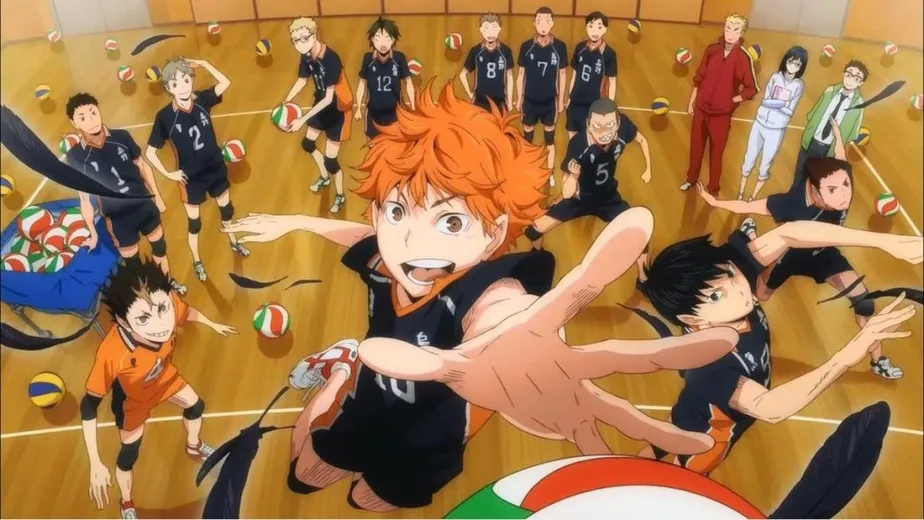
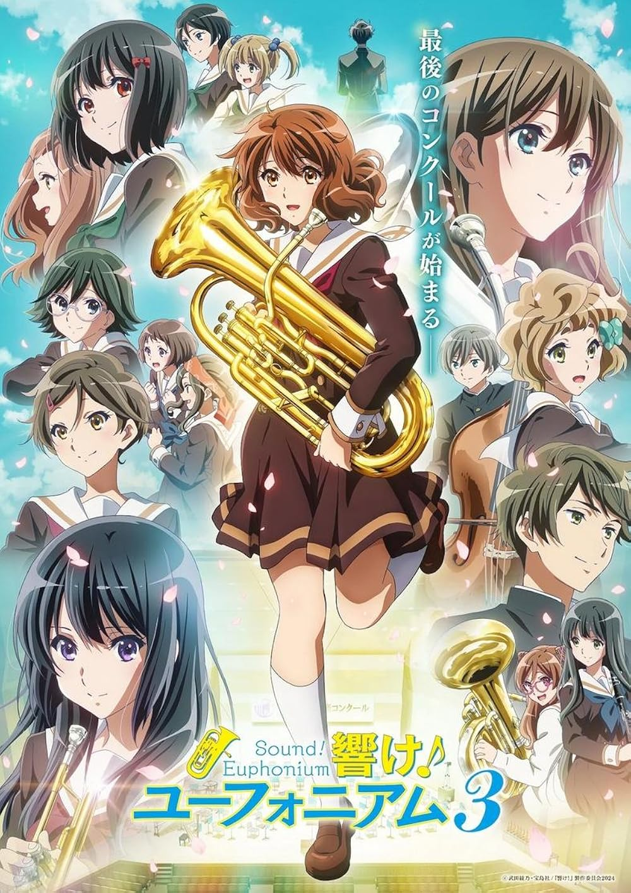
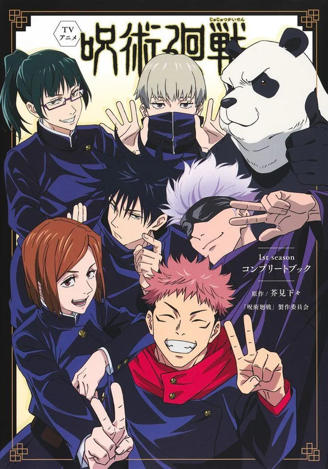
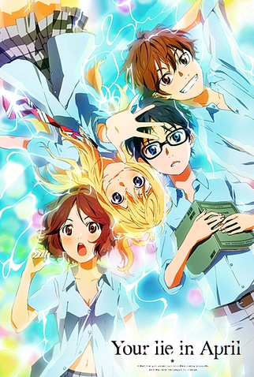

O gênero escolar nos animes é um dos mais populares e retrata a vida de estudantes dentro do ambiente acadêmico,
geralmente no ensino fundamental ou médio. As histórias costumam se passar em escolas japonesas e exploram o cotidiano dos
personagens, incluindo aulas, amizades, clubes, festivais culturais e eventos esportivos, criando um cenário familiar e
acessível para o público.
Esse gênero é frequentemente combinado com outros, como romance, comédia, drama e até fantasia, permitindo uma grande
variedade de narrativas — desde histórias leves e divertidas até tramas mais profundas e emocionais. Além disso, o
ambiente escolar funciona como um espaço ideal para o desenvolvimento dos personagens, abordando temas como crescimento
pessoal, descobertas, relações sociais e os desafios da juventude.

Kaguya-sama: Love is War se passa em uma prestigiada escola e acompanha a rivalidade romântica entre Kaguya Shinomiya e
Miyuki Shirogane, dois estudantes extremamente inteligentes e orgulhosos que fazem parte do conselho estudantil.
Apesar de estarem claramente apaixonados um pelo outro, nenhum dos dois quer admitir seus sentimentos primeiro, pois
acreditam que isso significaria “perder” na relação. Assim, cada episódio se transforma em uma verdadeira batalha
psicológica, onde ambos criam planos elaborados para fazer o outro confessar.
Ao lado deles estão personagens marcantes como Chika Fujiwara, que frequentemente causa caos com sua personalidade
imprevisível, tornando as situações ainda mais absurdas e divertidas.

Haikyuu!! acompanha Shoyo Hinata, um garoto apaixonado por vôlei que, apesar de sua baixa estatura, sonha em se tornar um
grande jogador. Inspirado por um lendário atleta conhecido como “Pequeno Gigante”, Hinata decide entrar no time de vôlei de
sua escola e provar que altura não define talento.
Ao ingressar no ensino médio, ele acaba jogando ao lado de Tobio Kageyama, um levantador genial com quem já teve uma
rivalidade no passado. Apesar das diferenças, os dois precisam aprender a trabalhar juntos para fortalecer o time da escola
Karasuno.
Ao longo da história, a equipe enfrenta adversários cada vez mais fortes, desenvolvendo estratégias, habilidades e espírito
de equipe. Cada partida é intensa e cheia de emoção, destacando o crescimento individual e coletivo dos jogadores.

Hibike! Euphonium acompanha Kumiko Oumae, uma estudante do ensino médio que entra para a banda de música de sua escola sem
grandes expectativas. No entanto, ao perceber o novo comprometimento do grupo em alcançar um alto nível e competir em torneios,
ela começa a se envolver mais profundamente com a música.
Ao lado de colegas com diferentes personalidades e motivações, Kumiko enfrenta desafios tanto técnicos quanto emocionais,
lidando com pressão, rivalidades internas e o desejo de melhorar. A presença de personagens como Reina Kousaka também traz à
tona questões sobre talento, dedicação e ambição.
Conforme a banda se prepara para competições importantes, os laços entre os integrantes se fortalecem, e cada um precisa
confrontar suas próprias limitações para crescer.

Boku no Hero Academia se passa em um mundo onde a maioria das pessoas nasce com superpoderes chamados “individualidades”.
A história acompanha Izuku Midoriya, um garoto que nasceu sem poderes, mas que ainda assim sonha em se tornar um grande herói.
Sua vida muda ao conhecer All Might, o maior herói do mundo, que reconhece seu potencial e decide lhe passar seu poder, o
lendário “One For All”. A partir daí, Midoriya entra na prestigiada U.A., uma escola especializada na formação de heróis.
Ao lado de seus colegas, ele enfrenta treinamentos intensos, provas difíceis e ameaças reais vindas de vilões perigosos,
como a Liga dos Vilões. Durante essa jornada, Midoriya precisa aprender a controlar seus poderes e amadurecer como pessoa.

Code Geass: Hangyaku no Lelouch se passa em um mundo onde o Sacro Império da Britannia domina grande parte do planeta. A
história acompanha Lelouch vi Britannia, um príncipe exilado que vive no Japão — agora chamado de Área 11 após ser
conquistado pelo império.
Sua vida muda ao obter o poder do “Geass”, uma habilidade misteriosa que lhe permite dar ordens absolutas a qualquer pessoa.
Com esse poder, Lelouch assume a identidade de “Zero” e inicia uma rebelião contra Britannia, buscando vingança e a criação
de um mundo melhor para sua irmã.
Ao longo da trama, ele enfrenta batalhas estratégicas, conflitos políticos e dilemas morais complexos, especialmente em
relação a seu antigo amigo Suzaku Kururugi, que luta do lado oposto.

Jujutsu Kaisen acompanha Yuji Itadori, um estudante com grande força física que acaba se envolvendo com o mundo das
maldições — criaturas formadas a partir de emoções negativas humanas. Sua vida muda drasticamente quando ele engole um objeto
amaldiçoado, tornando-se o hospedeiro de Ryomen Sukuna, um dos espíritos mais perigosos que já existiram.
Para controlar essa ameaça, Yuji entra na Escola Técnica de Jujutsu de Tóquio, onde aprende a combater maldições ao lado de
outros feiticeiros, como Megumi Fushiguro e sob a orientação do poderoso Satoru Gojo.
Enquanto enfrenta inimigos cada vez mais fortes, Yuji também precisa lidar com o peso de sua condição e com decisões
difíceis sobre vida, morte e sacrifício.

The First Slam Dunk revisita o clássico universo de Slam Dunk com foco em Ryota Miyagi, o ágil armador do time da escola
Shohoku. A história alterna entre o passado de Ryota — revelando suas motivações, dificuldades pessoais e relação com o
basquete — e o presente, onde ele participa de uma partida decisiva.
O filme retrata o confronto entre Shohoku e a poderosa equipe de Sannoh, considerada a melhor do país. Durante o jogo, cada
momento é carregado de tensão, estratégia e emoção, destacando não apenas as habilidades dos jogadores, mas também suas
histórias e determinações.
Com uma abordagem mais madura e cinematográfica, a obra aprofunda os personagens enquanto entrega uma partida intensa do
início ao fim.

Boku no Kokoro no Yabai Yatsu acompanha Kyotaro Ichikawa, um estudante introvertido e com pensamentos sombrios, que
acredita ser alguém “perigoso” e deslocado do resto da turma. Em sua imaginação exagerada, ele chega a fantasiar situações
violentas, especialmente envolvendo colegas de classe.
No entanto, tudo começa a mudar quando ele passa a observar mais de perto Anna Yamada, uma garota popular, alegre e
aparentemente perfeita. Ao conviver com ela no dia a dia, Ichikawa percebe lados inesperados de sua personalidade — e, aos
poucos, seus sentimentos começam a se transformar.
Entre momentos constrangedores, situações engraçadas e interações sinceras, a relação dos dois evolui de forma natural,
mostrando o crescimento emocional de Ichikawa e sua saída gradual do isolamento.

Great Teacher Onizuka acompanha Eikichi Onizuka, um ex-delinquente e líder de gangue que decide se tornar professor — não
exatamente por vocação, mas com o objetivo inicial de ter uma vida fácil e até conquistar garotas.
No entanto, ao conseguir um emprego em uma escola, Onizuka recebe uma das turmas mais problemáticas, composta por alunos
rebeldes e desconfiados de professores. Usando métodos nada convencionais, muitas vezes exagerados e até absurdos, ele começa
a enfrentar os problemas pessoais de cada estudante, indo além do ensino tradicional.
Ao longo da história, sua atitude sincera e sua disposição para se envolver de verdade na vida dos alunos acabam
conquistando a confiança da turma, ajudando-os a lidar com traumas, bullying e dificuldades emocionais.

Shigatsu wa Kimi no Uso (Your Lie in April) acompanha Kousei Arima, um prodígio do piano que, após a morte de sua mãe,
perde a capacidade de ouvir o som de sua própria música, abandonando completamente o instrumento.
Sua vida muda ao conhecer Kaori Miyazono, uma violinista livre, energética e cheia de personalidade, que o inspira a voltar
ao mundo da música. Com seu jeito espontâneo, Kaori desafia Kousei a enfrentar seus traumas e redescobrir a paixão que havia
perdido.
Ao longo da história, apresentações musicais emocionantes se misturam com o desenvolvimento dos personagens, revelando
sentimentos profundos e relações marcantes.